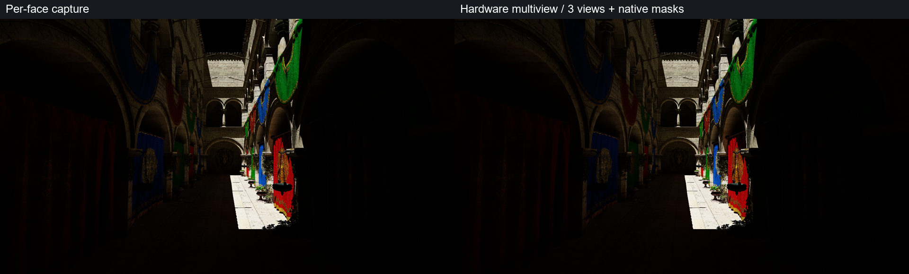
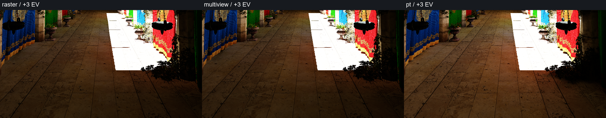
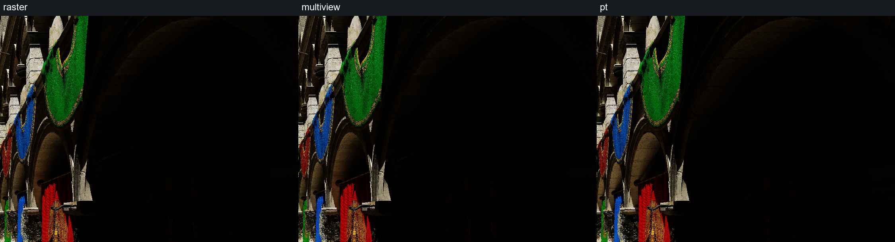
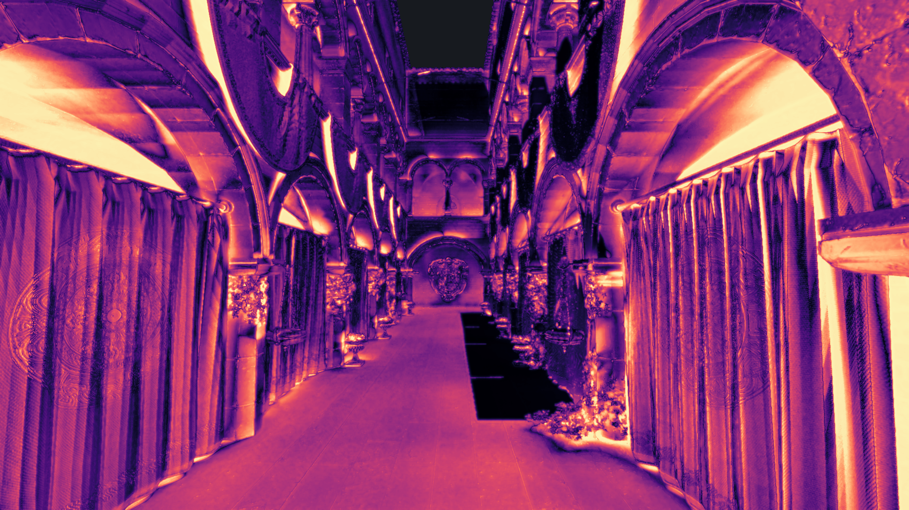
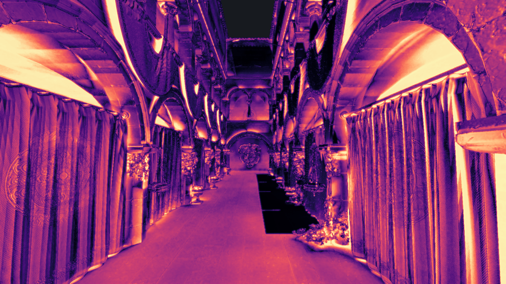

后续复查已将层路由改为PSO静态偏移，并补充原生管线统计与消融测试，见 多视图瓶颈排查。本页保留原实验结果。
已接入真正的D3D12 View Instancing。RTX5070实测Tier3；六面分成两组三视图，按可见性mask分组间接绘制，并用原生SetViewInstanceMask关闭不可见视图。本次未获得明显加速：完整图耗时变化 -0.36%。选项保留，默认关闭；原射线后端和逐面光栅均可用。
| 方案 | MSE ↓ | HDR-FLIP ↓ | 完整图GPU ms | Probe更新GPU ms |
|---|---|---|---|---|
| 原逐面光栅捕获 | 0.00054042079 | 0.41114 | 83.676 | 81.900 |
| 原生三视图＋硬件mask | 0.00054164023 | 0.41225 | 83.375 | 81.602 |
画质均对照同一个未经降噪65536 spp PT。原逐面光栅的画质图复用上一轮已稳定结果；本轮重新测了两方案的GPU耗时。新多视图从空缓存预热2048帧，再Accumulate 512 帧，连续两次通过稳定检查。原图两组不是相同随机序列，微小差异不能直接视为系统性画质增益。多视图与原光栅之间的HDR MSE＝6.6072321e-07。原射线图先前约2.11ms，仅作背景参考，本轮不重新计时。

底层通过Device.cpp的PSO创建dispatcher，在shader显式声明gFalcorViewInstancing3参数块时，使用ID3D12Device2::CreatePipelineState及D3D12_VIEW_INSTANCING_DESC创建三个视图的PSO。SV_ViewID选择投影，VS写入相应纹理层。没有改Slang二进制包。其他shader继续原有PSO创建路径。能力不足的设备/后端自动回退逐面路径。
GPU计算物体包围盒对各面的可见性。三个视图有7种非空可见性mask，分别生成16/32位索引间接绘制列表；CPU在各列表前设置对应硬件mask。这样不可见视图不会仅仅在VS末端裁掉。着色、256方向样本/probe、八面体存储、SDK积分/重定位/分类、屏幕查询和Accumulate都保持同一流程；1024预算也保持不变。
还测试了把相邻三个probe的同朝向面放在一组，使用同样的硬件mask。探索计时中它略慢于原逐面路径；同probe三面的分组基本持平。因此没有自动替换默认路径。硬件多视图允许共享世界空间变换等工作，但每个视角的投影、三角形裁剪及光栅化仍需执行。本次结果表明仅靠这部分共享不足以解决约80ms的捕获开销；尚未用Nsight拆分各硬件阶段，不能仅凭这个计时把全部成本归因于某个单独阶段。
SponzaLambert默认相机，方向光50、点光关闭，1920×1080；官方22³探针布局，256方向/probe，每帧1024个probe轮转、末尾回绕补足预算；cubemap每面32²，relocation/classification开启，hysteresis0.97，八点插值，两项数学优化开启；无FG/NRD/ReSTIR/RTXDI。
在稳定probe位置上冻结SDK更新，遍历全部10648个probe，与旧GS捕获逐像素核对：旧版命中 63,457,146 个像素，新版缺失 0、新增 0、非有限值 0。位置差超过1mm的命中 22,101 个；其中相同三角形上的位置差 0 个，最大位置差 0.5404 场景单位。不同三角形取胜的边界差异仍存在，不能宣称逐位相同。
画质阶段恢复持续更新1024 probe/帧，清空并开启SingleCompensated Accumulate。最终累积翻倍相对RMS=0.0469%，显示平均变化=0.0298个8位灰阶，99分位=0.3454灰阶。阈值分别为0.1%、0.25和2，连续两次通过。这里稳定指满足画面变化阈值。
计时在同一进程、同一场景、同一图中按原逐面→多视图→多视图→原逐面的ABBA顺序进行，每次预热32帧、记录128帧，去掉Profiler前4条后求均值。两轮等权平均。全部32批捕获、硬件mask列表、SDK更新均计入；计时期间probe持续更新且Accumulate开启。截图、CPU诊断读回、可见性校验不计入。两组GBuffer位置一致，法线与PT一致。MSE在线性HDR可见表面mask上求均值，HDR-FLIP使用官方flip_evaluator、ACES、PPD67和统一曝光范围。
地面统一提亮3EV检查暗部；拱门使用原曝光。


固定Magma[0,1]，黑紫误差小、橙黄误差大；先原逐面、后多视图。非百分比相似度。


开关：DDGI → Raster cubemap probe capture → Cull objects per probe face → Hardware multiview (3 views)。View grouping选择同probe的面或相邻probe同朝向面。默认硬件多视图关闭。脚本：tests/ddgi/probe_multiview_comparison.py、probe_multiview_benchmark.py。指标、逐轮耗时、配置和源码哈希 · 全probe校验。API参考：D3D12 View Instancing规范。